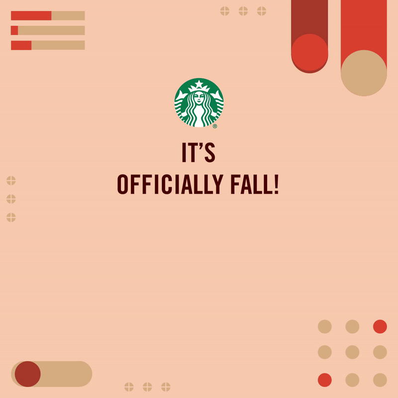
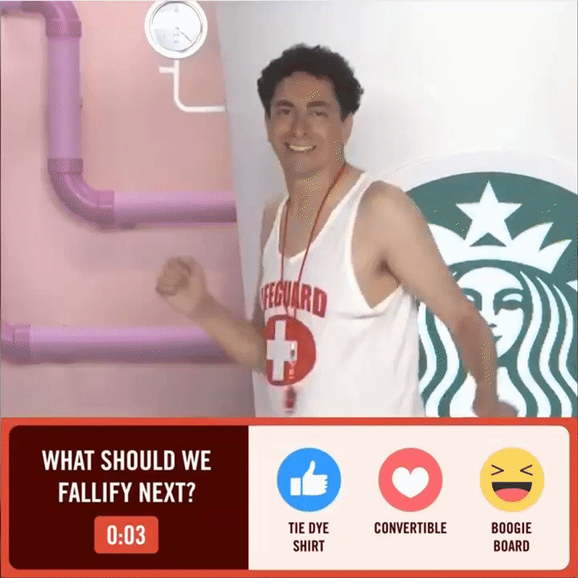

Starbucks
Starbucks was one of my accounts at Big Spaceship. As the dedicated designer on the Starbucks team, my responsibilities included everything from design and illustration, to post-production and storyboarding.
Fallifier (2019)
To celebrate the return of the Pumpkin Spice Latte, we proposed designing a PSL machine that “turned summer into fall,” which led to the Fallifier Facebook livestream. I helped design the set, and I led the design and animation of all of the motion graphics and LED screens in the livestream. Viewers voted on summer items to send through a giant PSL cup to "Fallify." The event drew 247K unique viewers and user commentary engagement was more than double that of the previous year's Holiday livestream.
Since the design direction spanned across production, design, and motion, there were many assets and early designs which can all be viewed more fully here.




Group Creative Director - Adam Gloo
Associate Creative Director (art) - Liz Agans
Associate Creative Director (copy) - Kyle Kimball
Designer - Alex Ling
Group Director, Content Production - Jordan Makow
Executive Producer - Natalie Moutoussis
Executive Producer - Stephen Gariepy
Senior Producer - Emily Glaser
Instagram Filters
We had the opportunity to create interactive digital activations with Starbucks, including making games and filters for Instagram. For “Smile, Sip, Spring” (2021) and “Which Drink Are You?” (2020), I was responsible for all design and illustration and worked closely with the Senior Technologist to bring the filters to life.
Group Creative Director - Adam Gloo
Creative Director - Kristina Caizley
Associate Creative Director (art) - Liz Agans
Associate Creative Director (copy) - Kyle Kimball
Designer - Alex Ling
SVP, Creative Technology - Layne Harris
Senior Technologist - Paul Baranowski
Nitro (2019)
To announce the launch of Nitro Cold Brew, Big Spaceship and Starbucks leaned into the "Whoa!" feeling of the energizing drink. I was responsible for post-production (video-editing, photo-editing, color correcting), storyboarding pre-production comps, and designing and packaging banners to be produced by our media partner. Part of our campaign was featured in AdWeek.
Group Creative Director - Adam Gloo
Creative Director - Christine Gratton
Associate Creative Director (art) - Bradford Gilmore
Associate Creative Director (copy) - Greg Berman
Designer - Alex Ling
Group Director, Content Production - Jordan Makow